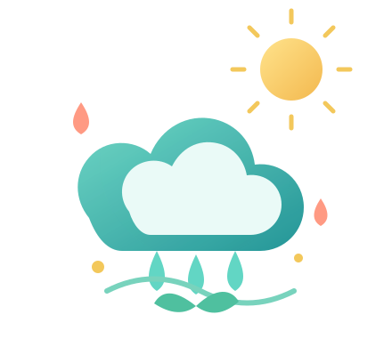

Dos charcos, dos condiciones
Comparan un charco al sol con otro a la sombra y explican cuál se seca primero y por qué.
Sin clasificar
Desafío para docentes de primaria
Tu aula está por comenzar un proyecto sobre el ciclo del agua. Pero no todos pueden acceder, participar y mostrar lo que saben de la misma manera. Tu misión es detectar las barreras, apoyarte en representaciones visuales y rediseñar la experiencia sin bajar la meta de aprendizaje.
La misión dura aproximadamente 15 minutos. El registro final se admite una sola vez por correo electrónico.

La meta de aprendizaje se mantiene.
Cuatro llaves para abrir la experiencia.
Al final podrás descargar tu ficha de diseño.
Conocé al grupo y observá qué aspectos del contexto pueden limitar su participación.
No busques una característica de la persona. Observá qué está dificultando la actividad:
Primero seleccioná un perfil de arriba. Después, marcá una de estas cuatro dimensiones. La devolución aparecerá debajo.
Tocá las tarjetas que sí ayudarían a estos estudiantes. Podés elegir varias. Hay propuestas que facilitan el acceso y otras que mantienen o agregan barreras.
Buscá propuestas que amplíen las vías para percibir la información, aclaren los pasos, ofrezcan seguridad para participar y faciliten el uso del espacio y los materiales.
Imaginá que el grupo observa un charco que desaparece después de un día de sol. ¿Qué experiencias, comparaciones y explicaciones pueden ayudar a comprender lo que pasó?
Comparan un charco al sol con otro a la sombra y explican cuál se seca primero y por qué.
Copian ocho veces la palabra «evaporación» sin usarla para explicar una situación.
Ordenan tres imágenes del ciclo del agua y explican qué pistas les permitieron decidir el orden.
Aprenden una lista de términos de memoria, sin conectarlos con el fenómeno observado.
Preguntate qué tiene que hacer el estudiante: ¿comparar, relacionar, justificar y construir una explicación, o solamente repetir una palabra o un texto?
El grupo estudió el ciclo del agua. Seleccioná al menos dos formas diferentes para que puedan explicar lo que comprendieron.
Explicar con voz propia o grabar un audio.
Crear un dibujo, mapa o infografía.
Construir una maqueta o hacer una demostración.
Redactar una explicación breve y organizada.
Una estudiante dice: «No me sale. Creo que está todo mal». ¿Qué respuesta reconoce un avance y le ofrece una pista para continuar?
«No me sale. Creo que está todo mal».
La autorregulación invita a reconocer qué se logró, qué apoyo sirvió y qué conviene hacer después.
¿Qué pregunta le permitiría pensar sobre su proceso y decidir cómo continuar?
Tu correo se usa solo para comprobar si ya completaste esta actividad. Tus respuestas, nombre y correo se guardan en la planilla de la capacitación, que debe mantenerse restringida a la coordinación. No se envían correos ni se solicitan datos de estudiantes.
Soy Lucía, estudiante de Ingeniería en Sistemas, y me dedico a crear experiencias educativas digitales, interactivas y divertidas.
Si te gustaría tener una actividad como esta, adaptada a tus clases o capacitaciones, ¡me encantaría diseñarla para vos! 😊
Hace click acá.